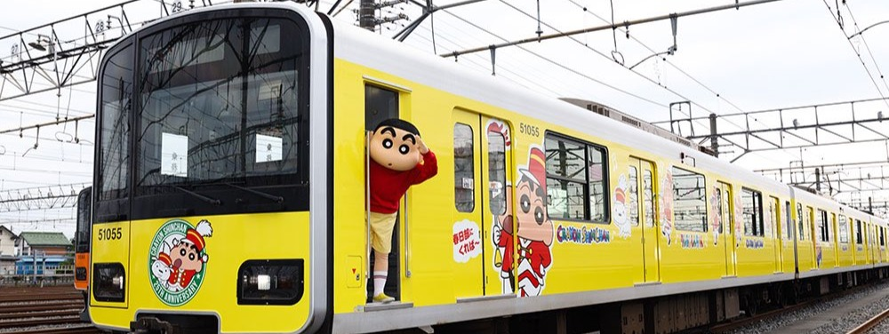

Hai Makkala
Vanakkam!!!
It's me Shinchan
Crayon Shin-chan 30 Anniversary
To commemorate the 30th anniversary of Anime "Crayon Shin-chan", the Nohara family's cities project is started! There are included Saitama prefecture, where Shin-chan lives, Akita prefecture, the birthplace of his father Hiroshi, and Kumamoto Prefecture, the birthplace of his mother Misae Nohara, JR Kyushu also joined this project. Limited express "Aso", and Kyushu Odan Tokkyu are wrapped with special design illustrations of Shin-chan.
My All Time favourit Shinchan movies
Crayon Shin-chan: The Hidden Treasure of the Buri Buri Kingdom (1994)
Shinchan and his lookalike embarks on a journey to defeat forces of a ruthless leader Mr. Anaconda and his forces.
Keriyon Shin-chan: Oh, I'm Sorry!(2000)
Shin-chan, with her family and friends, travel to island for watch The new movie of his favourite hero. But in this place found a secret organization with a malevolent ideas.
Crayon Shin-chan: Super-Dimension! The Storm Called My Bride (2010)
Shinchan Nohara sends a girl named Tamiko on a mission to bring his five-year-old self to that time period right before being captured. Reaching the past, she claims to be Shinchan's bride and takes him and his friends on a wild adventure to try to save the world to come.
Kureyon Shinchan: Arashi o yobu ougon no supai daisakusen (2011)
As a special agent, Shinchan partnered with a 7-year-old girl Lemon to break into the troubled kingdom of not farting.
Crayon Shin-chan: Intense Battle! Robo Dad Strikes Back 2014
A high tech company which specialises in making robots for construction turns Hiroshi nohara in a robot who then along with shinosuke fights to reclaim his original body fighting other robots.

Crayon Shin-chan: My Moving Story! Cactus Large Attack!2015
This is the story of the transfer of shinchan's family to mexico where they unintentionaly unravel the secret of some mysterious cactus